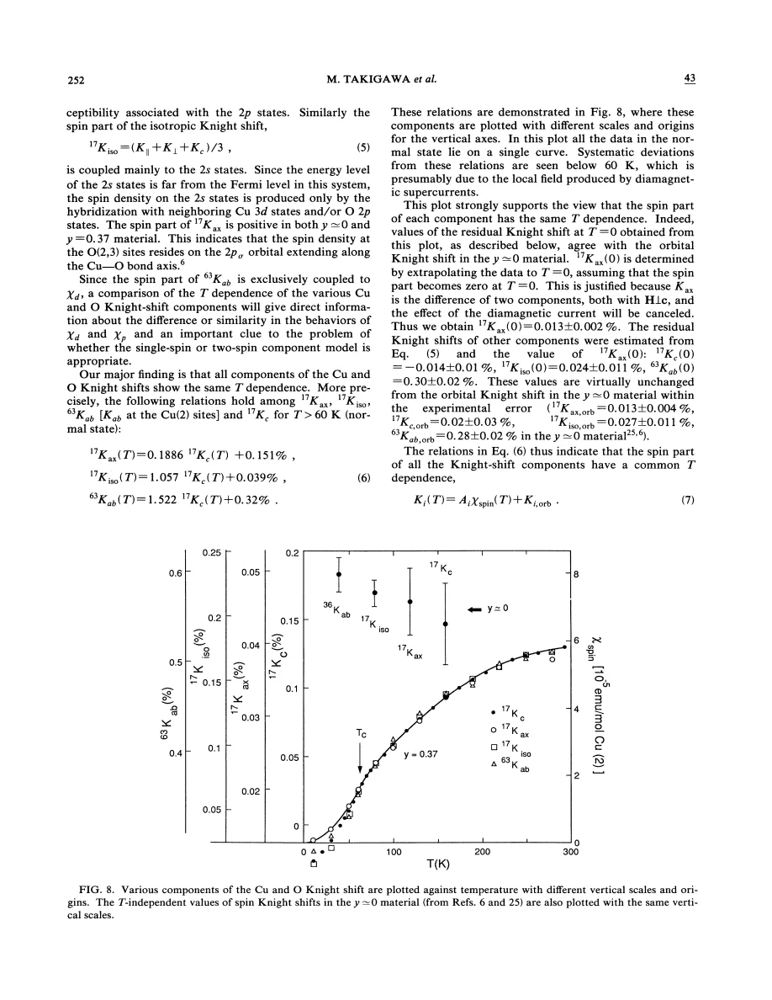
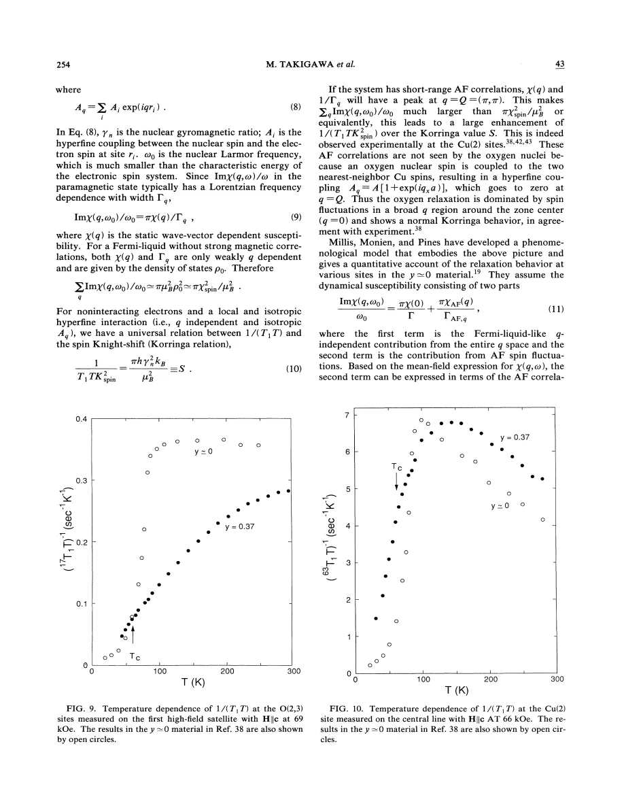
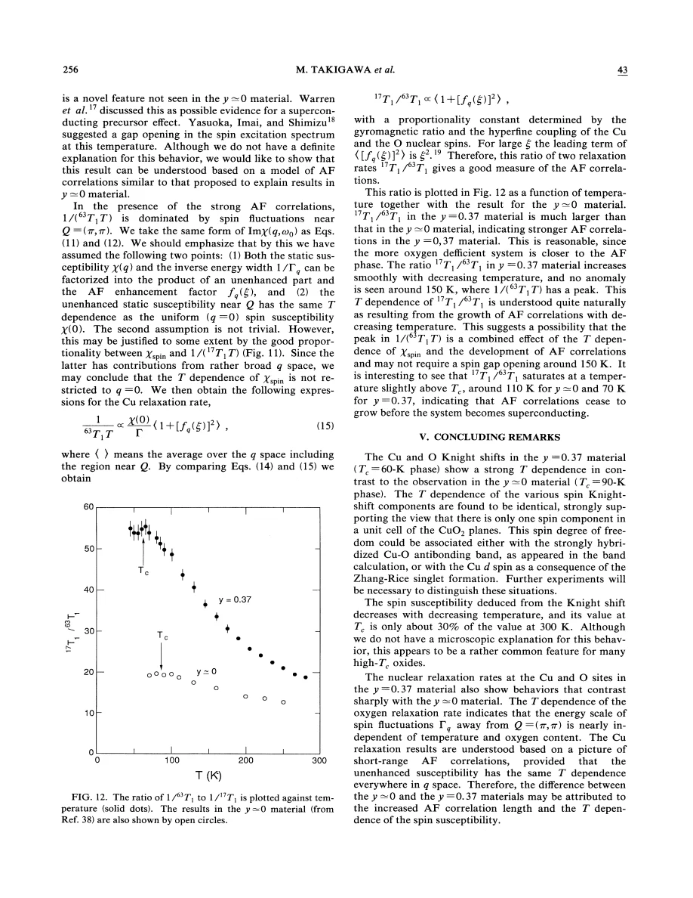

experiment · Takigawa · supplied source 1991
Cu and O NMR studies of the magnetic properties of YBa₂Cu₃O₆.₆₃ (Tᶜ = 62 K)
Cu and O share a decreasing uniform spin response but filter momentum differently; the Cu relaxation maximum alone does not require a new gap opening at 150 K.
The question: Why do Cu and oxygen relaxation behave differently in the same underdoped YBCO sample?
Before you start: the few terms you need
- Knight shift: local static spin response plus orbital and quadrupole contributions
- 1/T₁T: low-frequency fluctuation weight sampled by a nucleus
- hyperfine form factor: momentum-dependent sensitivity of a nuclear site
See → explain → test
Understand it in four pictures.
Picture 1 / 4
One sample, several nuclear sites
Look for: Follow planar Cu and O measurements after separating chain sites and quadrupole effects.
Swipe across the picture to read every label, or enlarge it below.
- Oriented YBCO6.63
- Resolve nuclear sites
- Correct orbital/quadrupole terms
- Compare spin response
Teaching measurement chain, not a fabricated NMR spectrum.
Site and orientation corrections are necessary before comparing spin responses.
Check the original: PDF p. 2 · PDF p. 3 · PDF p. 4 · PDF p. 5
Picture 2 / 4
Static shifts can share one spin component
Look for: Compare the temperature-dependent planar shifts after rescaling.
Swipe across the picture to read every label, or enlarge it below.
- Cu c-axis shift
- Other planar shifts
Different coupling coefficients multiply the same inferred uniform component.
A nearly constant Cu c-axis shift can result from hyperfine cancellation rather than constant spin susceptibility.
Picture 3 / 4
Oxygen filters the antiferromagnetic wavevector
Look for: Compare a Cu site with oxygen between two neighboring Cu sites.
Swipe across the picture to read every label, or enlarge it below.
- Spin fluctuations near Q
- O form-factor cancellation
- Weighted oxygen response
Normalized teaching functions, not fitted source data. Teal: spin fluctuations; orange: oxygen form-factor weight; purple: their product. Two-neighbor cancellation describes planar O.
At the commensurate antiferromagnetic wavevector, opposite neighbor contributions cancel at planar oxygen.
Picture 4 / 4
A relaxation peak needs a model
Look for: Trace the balance of decreasing uniform susceptibility and increasing correlation length.
Swipe across the picture to read every label, or enlarge it below.
- Cu rate peaks near 150 K
- χ₀ falls while ξ grows
- No separate gap onset required
This is the source's conditional model explanation, not proof that all gap physics is absent.
The authors' factorized model can produce a Cu maximum without introducing a new excitation gap at that maximum.
Predict before revealing
If uniform χ decreases but antiferromagnetic correlation length grows, can the Cu relaxation rate have a maximum?
Choose an answer, then compare the reasoning.
That is the paper's model-based explanation. A maximum alone does not uniquely locate a new excitation gap.
Read the answer
Yes; their competing factors can create a maximum That is the paper's model-based explanation. A maximum alone does not uniquely locate a new excitation gap.
Go deeper Follow the full argument
A controlled multi-nucleus comparison
Takigawa and colleagues study an oxygen-characterized YBa₂Cu₃O₆.₆₃ specimen with a superconducting transition near 62 K. The same oriented powder supports measurements of planar copper and oxygen, making the comparison less vulnerable to differences between separately prepared samples. Chain Cu sites and planar Cu sites must be distinguished, and the quadrupole contribution to the measured resonance shifts must be accounted for. Their oxygen-deficiency notation uses 7 − y, unlike papers that use y for the total oxygen content. Applied fields around 6–7 T shift the superconducting transition modestly, so normal-state behavior well above Tc is the clearest setting for the central comparison. At low temperatures, superconducting diamagnetic fields and increasingly distributed relaxation complicate simple shift or single-T₁ interpretations.
What the shifts establish
Several planar Cu and O shifts have the same temperature dependence after allowing different hyperfine couplings and temperature-independent orbital offsets. The inferred uniform spin susceptibility decreases continuously on cooling, becoming about 30% of its room-temperature value near Tc. A striking exception in the raw data is the nearly temperature-independent Cu shift for the c-axis field direction. The authors explain this by cancellation between on-site and transferred hyperfine terms, so it is not evidence that the electronic spin response is unchanged. A shared effective spin component is consistent with strongly coupled Cu–O degrees of freedom. It does not uniquely choose a particular microscopic singlet construction or band description. Possible explanations of the decreasing uniform response include gap-like density-of-states effects and correlated-spin mechanisms; the shifts alone do not select among them.
Why oxygen and copper relax differently
The nuclear relaxation rate samples low-frequency fluctuations over momentum, weighted by the square of a hyperfine form factor. Copper remains sensitive to fluctuations near the antiferromagnetic wavevector Q = (π/a, π/a). A planar oxygen between two equivalent Cu neighbors receives contributions with opposite phase at Q, producing cancellation. Oxygen relaxation consequently emphasizes a different part of the fluctuation spectrum. This is why a decreasing oxygen 1/T₁T and a copper maximum near 150 K can coexist without contradiction. Oxygen 1/T₁T approximately tracks the inferred uniform susceptibility rather than its square. The rate-to-shift comparison therefore differs from a simple uncorrelated-metal Korringa expectation. The experiment demonstrates the value of combining nuclear sites rather than treating any single relaxation curve as the entire electronic spin spectrum.
The conditional correlation-length explanation
The authors analyze the data with a phenomenological antiferromagnetic fluctuation model. It factorizes susceptibility and damping into a common uniform component and a momentum-dependent enhancement characterized by a correlation length ξ. Under these assumptions, the oxygen-to-copper T₁ ratio tracks a momentum average that grows approximately as ξ² for sufficiently large ξ. The ratio grows on cooling and shows no special anomaly at the copper relaxation maximum. Meanwhile the uniform component decreases. Their product can generate a maximum in the Cu rate without requiring a fresh excitation gap to open specifically around 150 K. This is an important historical nuance: the paper reports strong normal-state suppression and correlations, but explicitly argues that the relaxation maximum is not by itself a uniquely identifiable gap-onset temperature.
What remains open
The fluctuation model is not a direct reconstruction of χ(q,ω) at every momentum. Its factorization, damping assumptions and form-factor treatment determine how the correlation length is inferred. The approximately temperature-independent damping suggested by oxygen comparisons is a property of this analysis, not a universal law for cuprates. At lower temperatures, recovery fits become less satisfactory and distributions matter, while below Tc shifts are affected by diamagnetism. The safest use of the paper is to distinguish uniform static suppression from momentum-weighted dynamics, then test whether a proposed gap interpretation is actually necessary. Later comparisons involving Ca-doped YBCO show that uniform shifts can decrease even when low-frequency Cu relaxation grows, reinforcing this distinction. Neither nuclear observable alone specifies all excitation energies or the microscopic origin of the pseudogap.
Translate the mathematics Key equations and symbol meanings
Ki(T) = Ki,orb + Ai χspin(q = 0,T)
Symbols: i: site and field direction; Ai: effective hyperfine coupling; Ki,orb: orbital shift.
A common temperature dependence can appear with different signs or a near-cancellation of coupling. Quadrupole corrections precede this spin comparison.
1/T₁T ∝ Σq |A(q)|² χ″(q,ωn)/ωn
Symbols: A(q): hyperfine form factor; ωn: nuclear frequency; χ″: dissipative spin susceptibility.
Relaxation samples momentum-weighted low-frequency dynamics, unlike the uniform Knight shift.
AO(q) ∝ 1 + exp(iqxa); AO(π/a,π/a) = 0
Symbols: a: Cu–Cu lattice spacing; x: direction joining the two Cu neighbors.
Teaching expression for the planar oxygen cancellation emphasized in the paper; real couplings depend on orientation.
Read the evidence A guided look at the original figures

Open the full original page ↗

Open the full original page ↗

Open the full original page ↗
What this paper does—and does not—establish
- Single composition and finite-field oriented powder; chain and planar sites must be distinguished.
- Correlation-length inference depends on the phenomenological factorization and hyperfine model.
- Low-temperature recovery distributions and superconducting diamagnetic shifts constrain interpretation.
Explain it back.
Try answering aloud before opening the explanation.
Why is a flat Cu c-axis shift inconclusive?
Its effective spin coupling nearly cancels between on-site and transferred terms.
Why does planar oxygen filter Q?
The two equivalent Cu-neighbor contributions cancel for the opposite phases of commensurate antiferromagnetic correlations.
Does the model disprove all spin-gap physics?
No. It shows that a separate gap onset at the Cu-rate maximum is not required by these data and assumptions.
Connect the next paper.
Source version, reading coverage and preservation
All eleven scanned PDF pages read visually at full page resolution, including spectra, equations, recovery plots and model discussion.
Reviewed body pages: 1, 2, 3, 4, 5, 6, 7, 8, 9, 10, 11. Cited external studies are not independently re-read; no separate supplement supplied.
Original file retained byte for byte. SHA-256: ea8a1c2a13983b651fa6baa7c1126caa55de550969779a5967f99fe04224d439
Filename: PRB - Takigawa - Cu and O NMR magnetic properties of YBCO6.63 - 1991.pdf.